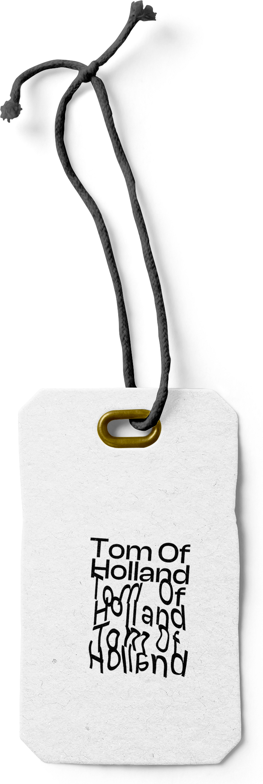
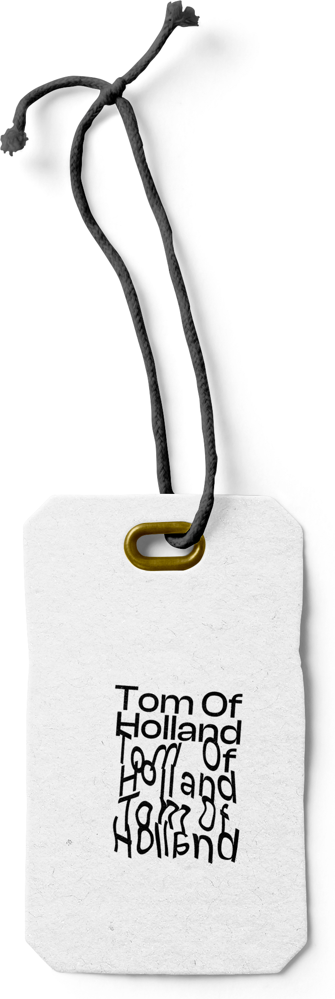

TOM OF HOLLAND.
Identité Visuelle - Tom Of Holland
Conception d’une identité visuelle pour le créateur de visible mending tom van deijnen.
Conception
Faire reconnaître l’activité et les valeurs de Tom Of Holland au travers d’une image de créateurs tout en sublimant les traces du temps..


 
